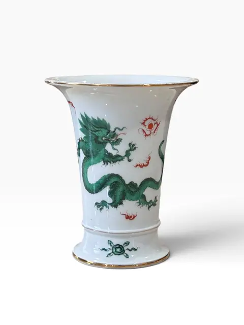
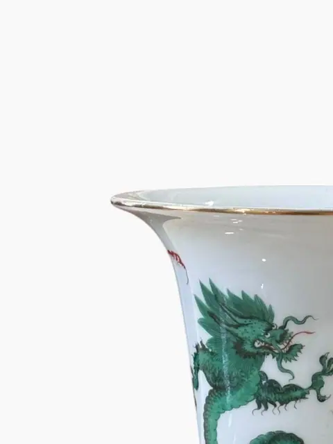
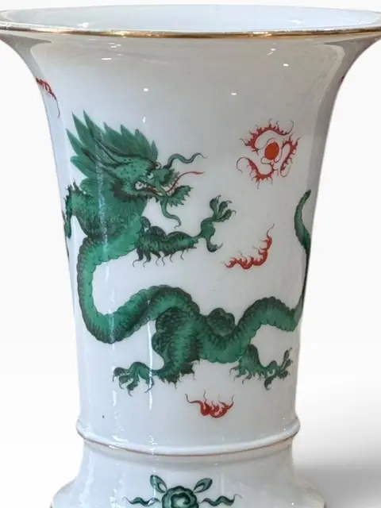
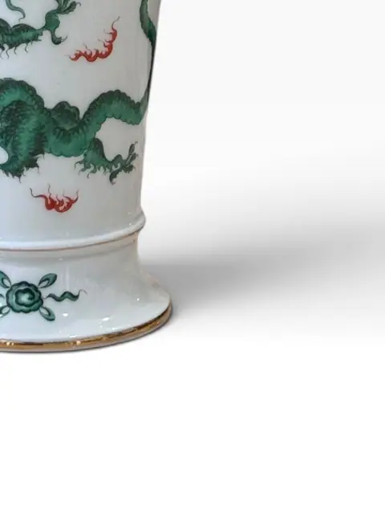

Handmade Objects
Porcelain Trumpet Vase with Green Ming Dragon Decoration
· 20th century
Price Upon Request




About the Item
A porcelain trumpet vase decorated with the celebrated Green Ming Dragon pattern: a green dragon pursuing the flaming pearl among iron-red clouds, with gilt banding at the rim and foot and a small green floral sprig on the foot. The pattern follows the famous Meissen 'Grüner Drache mit roter Flamme' design introduced in the 18th century after Chinese prototypes. Dimensions: Not available — no measurement photos in set Unmarked (no base/mark photo in set — crossed-swords mark NOT observed, so no Meissen attribution). Green dragon with red flames, gilt rim and foot. Describe as 'Meissen Green Dragon taste / in the Ming Dragon pattern' only.
Details
- Creation Year:
- 20th century
- Medium:
- Porcelain
- Period:
- 20Th
- Condition:
- Offered in the condition shown in the photographs.
- Reference Number:
- VO-377